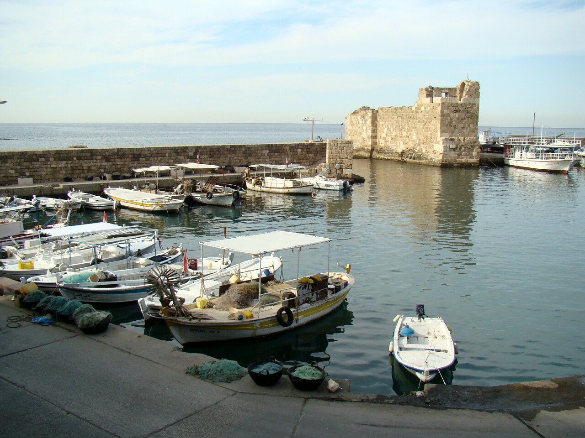
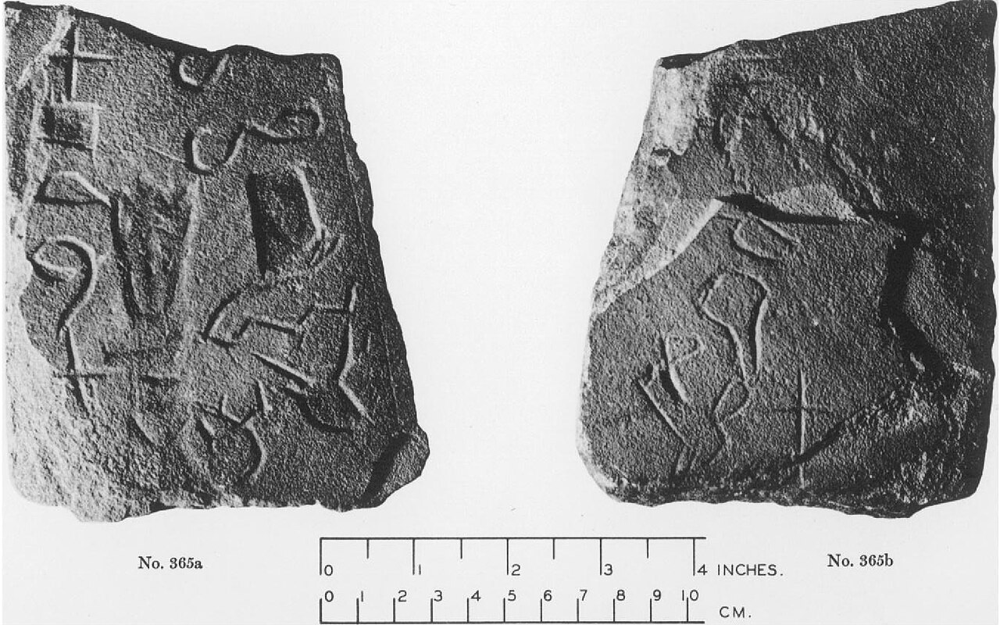
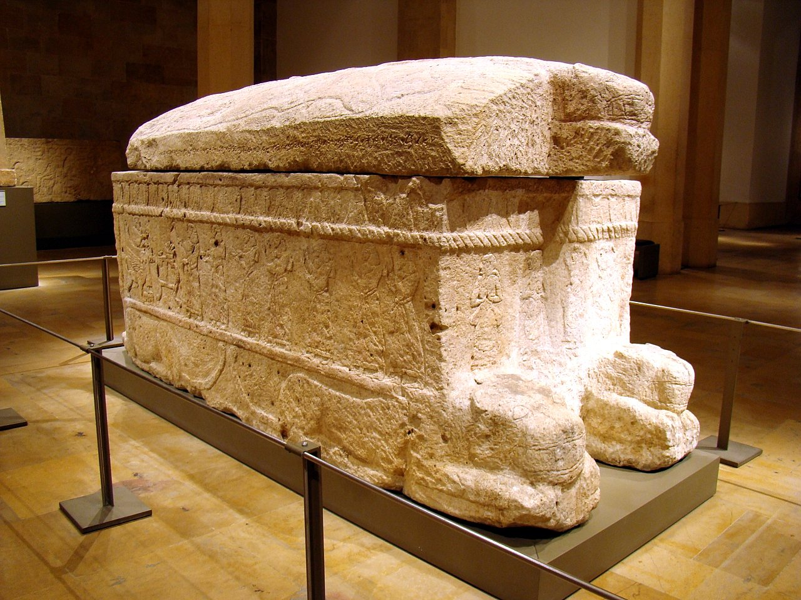
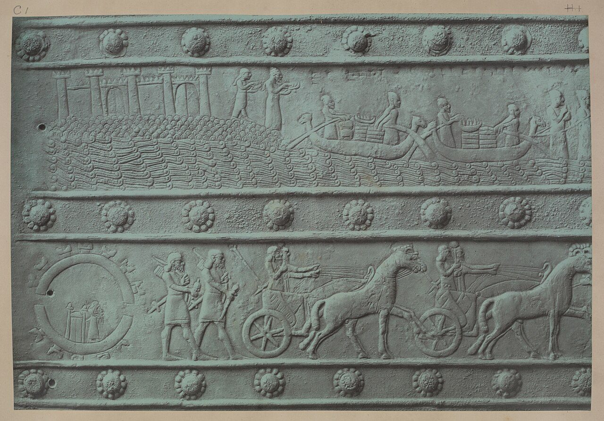
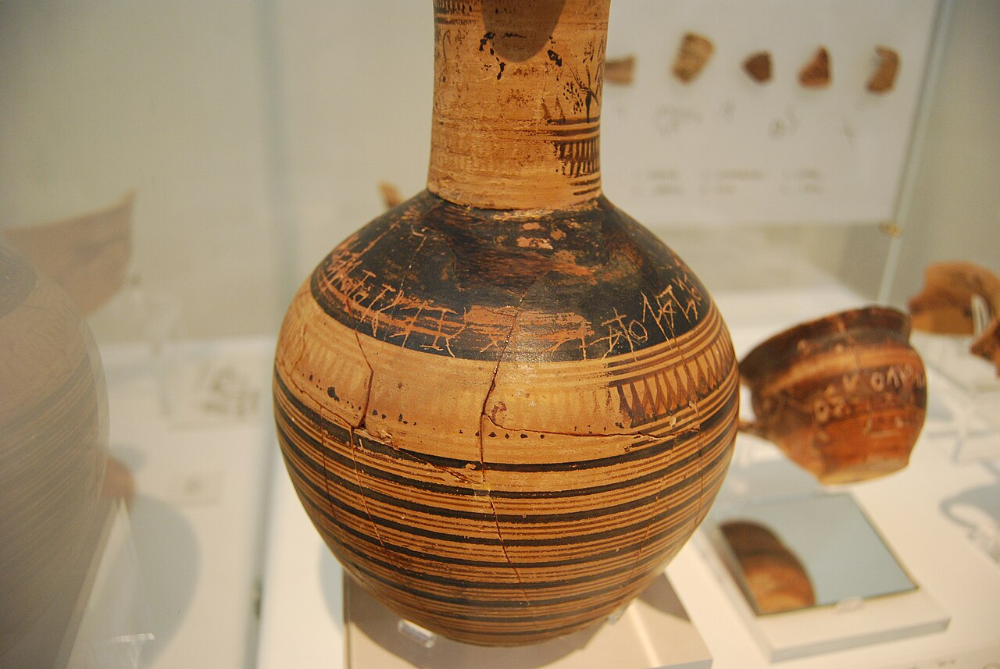
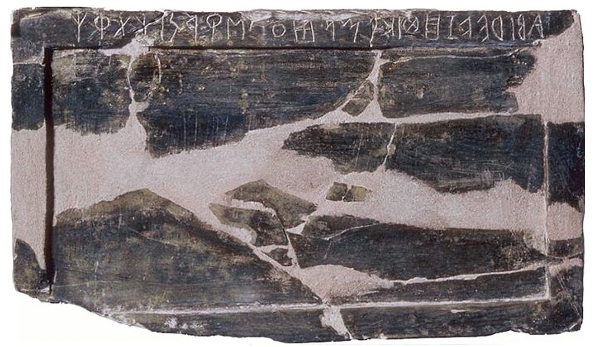
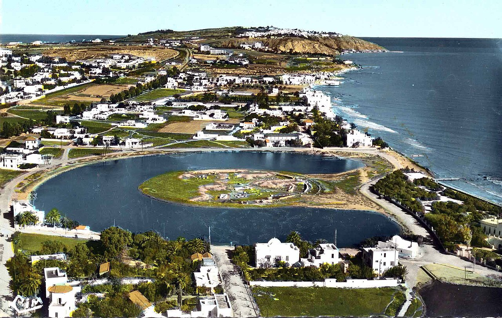

歴史・地理 History & Geographyアルファベットは、 だれが 作った？ わずか26字で英語のどんな言葉でも書けるアルファベットには、一人の発明者がいません。エジプトの字を借りた働き手から、写真のいまのビブロスの港を行き来した海の商人、母音を足した隣の人々へ。字の形の移り変わりと地中海の地図で、1,000年ほど続いたリレーを追ってみませんか。
2026.11.09 UP 約8分で読める 文：SOMOSOMO編集部
写真：いまのビブロスの港 Port of Byblos／O.Mustafin（2010年、パブリックドメイン）
Previously
前回は、漢字の始まりの話でした。いま知られている最も古いまとまった漢字は、殷の王が亀の甲羅や牛の骨で占った記録「甲骨文字」です。それが残ったのは、朽ちない骨に刻まれたからでした。殷を倒した周は「天命」で王朝の交代を説明し、その周も前256年に滅びました。
レバノンの港町ビブロス、1923年の終わり。町のまわりの崖が崩れ、古い王たちの墓がいくつも姿を現しました。フランスの考古学者が深さ10メートルの縦穴を下りていくと、途中の壁には、この下へ進むなと警告するような3行の落書き。底には、大きな石の棺が眠っていました。
棺の主はアヒラム。ふたと縁には38語の文が刻まれ、アヒラムとその息子のことを記し、のろいの言葉で結ばれていました。前1000年ごろのものとする説が広く受け入れられています。のちに「フェニキア文字」と呼ばれる文字で書かれた、まとまった長さの文としては、いま知られている最も古いものです。
この文字は、たった22の字でできていました。前回までに見た文字は、楔形文字で数百、ヒエログリフで千近く、漢字では数千もの記号を使い分けます。それが、20あまりの字で足りる文字に生まれ変わった。私たちが使うA・B・Cの、ご先祖にあたる文字です。アルファベットは、だれが作ったのでしょうか。
In a word
一人の発明 ではなく、エジプトの字を借りた働き手に始まる1,000年がかりのリレー だ。
01
Borrowed Pictures
エジプトの字から、 「頭の音」だけを 借りた
話は、ビブロスの石棺より数百年さかのぼります。エジプトの東、シナイ半島の山あいにあるセラビト・エル・カディム。ここにはトルコ石（青緑色の宝石）の鉱山があり、エジプトの王たちが何百年にもわたって人を送りこみました。鉱山のそばには、トルコ石の女神ハトホルをまつる神殿も建てられました。
1904年から翌年にかけての冬、イギリスの考古学者ペトリーがここで、見慣れない字を刻んだ石を見つけます。ヒエログリフに似ているのに、そのままでは読めません。鉱山で働く人や役人には、エジプトの言葉とは別の「セム語」（いまのアラビア語やヘブライ語の仲間）を話す人々が大勢いました。
ペトリーは、これがエジプトの字とは別のしくみの字だと気づきます。いまでは「原シナイ文字」と呼ばれる字です。シナイ半島で見つかった、アルファベットの最初の段階の字、という意味の名前です。

鉱山で見つかった字 セラビト・エル・カディムで見つかった石のかけらを、1928年に撮った写真です。十字や波線、四角い形など、絵のような字がいくつも刻まれています。下の目盛りから、手のひらほどの大きさだとわかります。写真：Serabit el-Khadim inscriptions, 365 ／Romain Butin（1928年、パブリックドメイン）
1916年、エジプト学者のガーディナーが、読み解く手がかりを見つけます。たとえば、四角い家の形の字。エジプトでは「家」を表す字ですが、セム語では家を「バイトゥ」（のちのベト）と言います。この字はその頭の音、「b」を表しているのではないか。
そう読むと、何度も出てくる字の並びが、女主人に愛された者、という意味の言葉と読めました。女主人とは、鉱山の神殿にまつられた女神ハトホルのことだと考えられています。
絵の意味は捨てて、その絵を表す言葉の「頭の音」だけを使う。牛の頭の絵は、牛を表すセム語「アルプ」（のちのアレフ）の頭の音に。これなら、話し言葉に出てくる音の数だけ字があれば足ります。じつはヒエログリフにも子音1つを表す字がありましたが、エジプトの書記たちは、それを意味を表す字と組み合わせ続けました。
では、作ったのはだれか。1990年代には、ナイル川に近いワディ・エル・ホルの谷でも、同じ種類の字を刻んだ岩が見つかります。年代は前1850年ごろか前1550年ごろかで、意見が分かれます。エジプトで暮らし、働いたセム語の人々が作ったという見方が有力です。ただ、作り手の名前は1つも残っていません。
02
Merchants of the Sea
海の商人が、 22の字を 地中海に広めた
前1200年ごろから、東地中海は大きな混乱に見舞われます。いくつもの王国が滅び、交易の道がとだえ、読み書きのできる人も大きく減りました。研究者が青銅器時代の終わりの崩壊と呼ぶできごとです。その混乱をくぐり抜けて栄えたのが、いまのレバノンの海岸に並ぶ町々でした。
ビブロス、シドン、テュロス。町はそれぞれ王を持つ独立した国で、全体をまとめて呼ぶ名前もなかったようです。彼らを「フェニキア人」と呼んだのは、ギリシャ人でした。町々は、山から切り出すレバノン杉を、良い木材の育たないエジプトなどへ船で売って栄えました。
冒頭のアヒラムの石棺は、このビブロスの王家の墓から出たものです。刻まれた22の字が表すのは子音だけ。母音は、読む人が言葉を知っていて補います。日本語でいえば「kmr」と書いて「こまる」と読むようなものです。それでも、字がこれだけ少なければ、商人でも覚えられます。

文字を刻んだ石棺 ベイルートの国立博物館にある、アヒラムの石棺です。側面には人々が並ぶ浮き彫り、下の角にはうずくまった獅子の像があります。フェニキア文字の文は、ふたと棺の縁に刻まれています。写真：Ahiram Sarcophagus 1 ／O.Mustafin（2010年、パブリックドメイン）
フェニキアの商人たちは船で地中海を西へ進み、各地に植民市（本国の人々が移り住んで作った町）を開きました。キプロス島、シチリア島、サルデーニャ島、北アフリカ、イベリア半島です。
テュロスの人々が開いたカルタゴ（いまのチュニジア）は「新しい町」という意味で、前7世紀には地中海の西の大国に育ちます。大西洋に面したガディル（いまのスペインのカディス）は、銀などの金属を手に入れるための港でした。
Fig.01 海の道が、 文字の道になった
地中海
ビブロス
シドン
テュロス
キティオン
カルタゴ
モテュア
ノラ
ガディル
アテネ
コリントス
ローマ
セラビト・エル・カディム
ワディ・エル・ホル
フェニキア人の町
植民市
そのほかの場所
見どころは、フェニキア人の町が地中海の東の端にかたまり、植民市が西の果てまで点々と続くこと。右下のエジプトの2か所は、第1章の字が見つかった場所です。地図は Natural Earth（パブリックドメイン）から作りました。
前9世紀には、東のアッシリア（いまのイラク北部から興った国）の王に、テュロスやシドンが船で貢ぎ物を届けています。字は、こうした船の行き来に乗って運ばれました。

貢ぎ物を運ぶ舟 アッシリアの王シャルマネセル3世（前9世紀）の門を飾った青銅の帯を写した、19世紀の図版です。上の段の左に塔の並ぶ町、波の上に荷を積んだ小舟が見えます。図版の題は、テュロスとシドンの船の貢ぎ物、という意味です。写真：Tribute of Ships of Tyre and Sidon ／ニューヨーク公共図書館所蔵の図版（1880年、パブリックドメイン）
西へ渡った字の例が、サルデーニャ島の南の海岸、ノラで1773年に見つかった石です。前9世紀の終わりから前8世紀の初めごろとされるフェニキア文字の碑文で、地中海の東の岸の外で見つかったものとしては、いまも最も古いとされています。
03
Adding Vowels
ギリシャ人は、 余った字を 母音にした
フェニキアの船は、エーゲ海のギリシャの人々とも行き来していました。前9世紀の終わりか前8世紀の初めごろ、ギリシャ人はこの文字を取り入れます。彼ら自身も、これをフェニキアの字と呼んでいました。前5世紀のギリシャの歴史家ヘロドトスは、フェニキアの王子カドモスが伝えたという言い伝えを書き残しています。
ところが、子音だけの字は、ギリシャ語には不便でした。フェニキアの言葉には、ギリシャ語にない子音がいくつもあります。一方でギリシャ語では、母音が書けなければ読み分けにくい言葉がたくさんありました。そこでギリシャ人は、使わない子音の字を母音に回しました。
のどを詰める音を表したアレフはAの音に、のどの奥で出す音のアインはOの音に。同じように、ヘーはE、ヨドはI、ワウはΥ（ウプシロン。uに近い音で、Yのもと）になりました。こうしてギリシャ文字は、子音と母音をどちらも字で書き分ける、知られている限り最初の文字になります。
Fig.02 牛の頭が、 Aになるまで
原シナイ
前19〜前15世紀
フェニキア
前11世紀〜
ギリシャ
前8世紀〜
ラテン
いま
アレフ
牛
Α
A
ベト
家
Β
B
メム
水
Μ
M
アイン
目
Ο
O
見どころは、牛の頭が向きを変えながらAになったこと。家の形はB、波の形はM、目の形はOに受け継がれました。字形はウィキメディア・コモンズのパブリックドメインの字形資料をもとに描いています。
字の名前も受け継がれました。フェニキアの字の名前は、その音で始まる言葉です。アレフは「牛」、ベトは「家」。ギリシャ語では意味のない名前になりましたが、アルファ、ベータとして残りました。英語の「アルファベット」は、この2つの字の名前をつないだ言葉です。
いま残る古いギリシャ文字の文の一つが、アテネの墓地で見つかった前740年ごろの水差しです。踊り手のなかでいちばん軽やかに踊る者への賞品とみられる言葉が刻まれています。王の記録でも神殿の文でもなく、踊りの賞品に、もう字が書かれていました。

踊りの賞品の水差し アテネの国立考古学博物館にある、ディピュロンの水差しです。肩のあたりに、細い線で引っかいた字が並んでいます。前740年ごろのもので、最も古いギリシャ文字の文の一つです。写真：Dipylon Oinochoe ／Durutomo（2010年、パブリックドメイン）
書く向きも、初めはフェニキアと同じ右から左でした。行ごとに向きを折り返す書き方も広まり、牛が畑を耕すように行き来することから「牛耕式」と呼ばれます。左から右に落ち着いたのは、ギリシャの古典期（前5〜前4世紀ごろ）のことです。
04
To Rome
エトルリアを経て、 ローマの字に なった
前8世紀ごろ、ギリシャのエウボイア島の人々が、イタリア半島の南のナポリ湾に町を開きます。そこで使われていたギリシャ文字を取り入れたのが、エトルリア人でした。
エトルリア人は、いまのイタリア中部、トスカーナのあたりに町々を築いた人々です。のちに地中海をまとめる大帝国になるローマも、このころはまだ小さな町で、伝承では一時、エトルリア人の王に治められていました。

字を並べた書き板 イタリア中部のマルシリアーナで見つかった、前700年ごろの象牙の書き板です。上の縁に、ギリシャ文字をもとにした字が右から左へ並んでいます。最も古いエトルリアの字の一覧で、フィレンツェの国立考古学博物館にあります。写真：Tavoletta di Marsiliana ／作者不明（撮影年不明、パブリックドメイン）
前700年ごろの書き板は横9センチほどの小さなもので、並ぶ字は26。英語のアルファベットと同じ数なのは偶然で、並ぶ字の中身は違います。前7世紀には、ローマの人々がエトルリアの字を受け継ぎました。これがラテン文字の始まりです。
ローマはやがてイタリア半島をまとめ、地中海の西でカルタゴとぶつかります。カルタゴの人々は、フェニキア文字の流れをくむ字で自分たちの言葉を書いていました。同じ祖先から分かれた字を使う2つの国が、海の覇権を争ったことになります。
前146年、ローマは3年近い包囲の末にカルタゴを攻め落とし、町を焼き払いました。生き残った約5万人は奴隷として売られます。同じ年、ギリシャの商業の町コリントスもローマ軍に焼かれました。フェニキアの植民市の中心と、ギリシャの名高い町が、同じ年に姿を消したのです。

円い港の跡 チュニジアのカルタゴに残る港の跡を、空から写した写真です。中央の、小島を囲む円い池が、カルタゴの軍船の港の跡です。ここには最大220隻の軍船をおさめられたとされます。写真：Carthage Ports Puniques ／作者不明（1958年以前、パブリックドメイン）
それでも、字と言葉は消えませんでした。カルタゴの滅亡から500年以上たった5世紀にも、北アフリカではフェニキア人の言葉が話されていたと、キリスト教の思想家アウグスティヌスが書き残しています。そして勝ったローマの字は、帝国とともにヨーロッパに広がり、いまの英語やローマ字にまで受け継がれました。
Fig.03 22の字が、 手渡されてきた道
前19〜前15世紀ごろ 原シナイ文字 エジプトで働いたセム語の人々が、ヒエログリフの絵の「頭の音」だけを使う 前11世紀〜 フェニキア文字 子音だけの22の字。海の商人が、地中海の東西へ運ぶ 前8世紀ごろ〜 ギリシャ文字 ギリシャ語で使わない子音の字を、母音の字に回す 前8〜前7世紀 エトルリア文字 イタリアのギリシャ人の町から、エトルリア人が受け継ぐ 前7世紀〜 ラテン文字 ローマが受け継ぎ、帝国とともに広める。英語やローマ字のもとに
見どころは、字を受け取った人々が、そのたびに自分たちの言葉に合わせて作りかえたこと。どの段にも、一人の発明者の名前はありません。
ふり返ると、アルファベットを作ったのは一人の天才ではありませんでした。エジプトの字を見ていた働き手が「頭の音」を使うことを思いつき、海の商人が22の字の文字として地中海に運び、ギリシャ人が母音を足し、エトルリア人とローマ人が自分たちの言葉に合わせて作りかえました。
字は、手渡されるたびに、ひと握りの専門家のものから、商人や普通の人も覚えられるものへと近づきました。作った人々の国が滅んでも、字は次の人々の手に渡って使われ続けたのです。
05
By the Numbers
数字で見る アルファベット
30〜 40 見つかっている原シナイ文字の碑文やかけらの数ほとんどがセラビト・エル・カディムから。最初の一歩の手がかりは、これだけしかない
24 ヒエログリフの中にあった、子音1つを表す字の数エジプトの人々は、これだけで書くことはせず、意味を表す字と組み合わせ続けた
約 70% 世界の人口のうち、ラテン文字で書く言語を話す人の割合（推計）ラテン文字で書かれる言語は3,000を超える
Here's the Fun Part
ここが面白い！CとGは、 もとは 同じ字だった
A・B・Cの順番は、とても古いものです。いまのシリアの海岸にあった町ウガリトでは、前14世紀 の粘土板に、楔形文字の形をした30の字を順に並べたものが見つかっています。その並び方は、のちのフェニキア文字の順番と大筋で同じで、それがギリシャ文字やラテン文字の順番のもとになりました。
その3番目は、gの音を表すギメル。ギリシャではガンマになりました。ところが、エトルリア人の言葉には、gとkの音の区別がありません。彼らはこの字をkの音に使い、受け継いだローマ人も、この字、つまりCで、kとgの両方を書いていました 。
やがてローマ人は、2つの音を書き分けるため、Cに小さな線を足した形のGを作ります。前230年ごろにローマで初めて授業料を取る学校を開いた、スプリウス・カルウィリウスが教え始めた、と伝えられています。
もとの7番目にあったZは、それより前に外されていたという記録があります。新しいGは、その空いていた7番目の席に入りました。Zはのちにギリシャの言葉を書くために取り入れ直され、今度はいちばん最後に置かれます。3番目のCと、7番目のG。形が似ているのは、もとが同じ字だからです。
次にキーボードでCとGを打つとき、2つの形を見くらべてみてください。2,000年あまり前のローマの教室で足されたと伝わる1本の線が、そこに残っています。
To be continued
前539年、いまのイランから興ったペルシアの王キュロスがバビロンを落とすと、フェニキアの町々はペルシアの海軍の船の多くを出します。広い国をつなぐ字は、シリア内陸に住んだアラム人の、フェニキア文字から分かれたアラム文字でした。ペルシアは、なぜ世界初の「世界帝国」とも呼ばれる大帝国になれたのでしょうか。
出典・参考
Ahiram sarcophagus （Wikipedia 英語版）：1923年の終わりの崖崩れでビブロスの王家の墓が現れたこと、ピエール・モンテによる発見、深さ10mの墓、縦穴の途中の3行の落書き（警告と解釈される）、ふたと縁の38語の文、のろいの言葉、前1000年ごろ（前10世紀）とする説が広く受け入れられていること（前850年ごろとする説もある）、フェニキア文字のまとまった文として最古、ふたの獅子の像Phoenician alphabet （Wikipedia 英語版）：22の子音字で母音を書かないこと、商人が地中海に広めたこと、字が少なく普通の人も読み書きを覚えられたこと、ギリシャ人が「フェニキアの字」と呼んだこと、ヘロドトスのカドモスの言い伝え、アラム文字などがフェニキア文字から分かれたことProto-Sinaitic script （Wikipedia 英語版）：セラビト・エル・カディムの約30〜40点の碑文とかけら、1904〜1905年の冬のペトリーの発見、ペトリーがエジプトの字と別のものと見たこと、1916年のガーディナーの読み（家の字＝b、「女主人（バアラト）に愛された者」、女主人はハトホルを指す）、前1850年ごろと前1550年ごろの2つの説、働き手と役人に多くのセム語の人々がいたこと、ワディ・エル・ホルの碑文Serabit el-Khadim ・Wadi el-Hol inscriptions （Wikipedia 英語版）：トルコ石の鉱山とハトホル神殿、1993年の発見と1999年の発表History of the alphabet （Wikipedia 英語版）：家のヒエログリフがセム語の「バイトゥ」の頭の音 b に使われたこと、ウガリトの前14世紀の粘土板（30字、約12枚に字の順番）、ギリシャ文字がフェニキア文字と同じ字を同じ順に並べること、ギリシャ文字とフェニキア文字の字の順番Egyptian hieroglyphs （Wikipedia 英語版）：中王国のころ約900の字、子音1つを表す24の字（数字の欄）。Cuneiform （同）：楔形文字の字の数（約600）Late Bronze Age collapse （Wikipedia 英語版）：前1200年ごろからの混乱、交易の道がとだえ読み書きのできる人が減ったことPhoenicia （Wikipedia 英語版）：ビブロス・シドン・テュロスなど独立した都市国家、全体を指す呼び名がなかったこと、エジプトへの杉の輸出、植民市の広がり、カルタゴが前7世紀に大国になったこと、ペルシアの時代（前539年にキュロスがバビロンを奪う、王の地位が保たれる、ペルシア艦隊の主力）Carthage （Wikipedia 英語版）：テュロス出身の人々が開いたとされること（伝説では女王エリッサ）、「新しい町」の意味、220隻の軍船の港、前146年の陥落と約5万人が奴隷として売られたこと。Third Punic War （同）：前149〜前146年、3年近い包囲。Cothon （同）：円い軍港Cádiz （Wikipedia 英語版）：テュロスの人々が開いたガディル、銀などの金属を手に入れる交易の港。Motya （同）：フェニキア人の植民市Balawat Gates （Wikipedia 英語版）：アッシュルナシルパル2世とシャルマネセル3世の時代の門の青銅の帯Greek alphabet （Wikipedia 英語版）：前9世紀の終わりか前8世紀の初めから使われたこと、子音と母音を書く最初の文字、アレフ→A・アイン→O・ヘー→E・ヨド→I・ワウ→Y、字の名前（牛・家）とアルファ・ベータ、右から左と牛耕式、古典期に左から右にAlphabet （Wikipedia 英語版）：「アルファベット」の語がアルファとベータからできたこと、字が少なく商人も覚えられたことDipylon inscription （Wikipedia 英語版）：前740年ごろ、アテネのディピュロンの墓地で出土、踊りの競技の賞品の言葉、アテネの国立考古学博物館Etruscan alphabet （Wikipedia 英語版）：イタリアのエウボイアのギリシャ人の町（ピテクサイ・クマエ）の字から生まれたこと、マルシリアーナの書き板（前700年ごろ、8.8×5cm、26字。オメガはまだない）、ローマ人が前7世紀に受け継いだこと、C で k と g を書いたことLatin alphabet （Wikipedia 英語版）：エトルリアの字から生まれたこと、エトルリア人が初期のローマを治めたこと、ラテン文字は3,000以上の言語に使われ、世界の人口の約70%が使うことC ・G （Wikipedia 英語版）：C と G のもとはギメル、エトルリア語に g と k の区別がなかったこと、スプリウス・カルウィリウス（前230年ごろに授業料を取る学校を開いた）が G を教え始めたこと、もとの7番目の Z が外されていたという記録。Z （同）：前300年ごろに外されたこと。Latin alphabet（上）：前1世紀に Y と Z をギリシャ語の言葉のために取り入れ、字の並びの最後に置いたことBattle of Corinth (146 BC) （Wikipedia 英語版）：前146年、ローマ軍がコリントスを焼いたことPunic language （Wikipedia 英語版）：アウグスティヌスによれば5世紀にも北アフリカでフェニキア系の言葉が話されていたことNora Stone （Wikipedia 英語版）：1773年にサルデーニャ島南岸のノラで発見、前9世紀末〜前8世紀初め、レバント（地中海の東の岸）の外で最古のフェニキア文字の碑文。Kition （同）：キプロス島南岸のフェニキア人の町。Arameans （同）：いまのシリア中部を故地とするセム語の人々Achaemenid Empire （Wikipedia 英語版）：「世界帝国」と呼ばれることがあること、アラム語とその字が広い国の書きことばとして使われたこと、海軍の乗り手の多くがフェニキア人（主にシドン）だったこと地図（Fig.01）：Natural Earth （パブリックドメイン）の海岸線から作成。町の位置はおおよそ
字形（Fig.02）：ウィキメディア・コモンズの Proto-Canaanite - aleph.png （これをもとに描き起こし）、Proto-semiticB-01.svg ・M-01・O-01、Phoenician aleph.svg ・beth・mem・ayin（いずれもパブリックドメイン）。ギリシャ文字とラテン文字は書体で示した
写真：CC0 またはパブリックドメイン。クレジットはそれぞれの写真の下に記しています